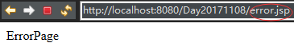

JSP指令
JSP指令的基本语法格式：<%@ 指令 属性名="值" %>
举例：<%@ page contentType="text/html;charset=gb2312"%>
注意：属性名部分是大小写敏感的
在目前的JSP 2.0中，定义了 page、include和taglib 这三种指令，每种指令中又都定义了一些各自的属性。
如果要在一个JSP页面中设置同一条指令的多个属性，可以使用多条指令语句单独设置每个属性，也可以使用同一条指令语句设置该指令的多个属性。
1 2 3 4 5 6
| // 第一种方式： <%@ page language="java" contentType="text/html;charset=gb2312" pageEncoding="UTF-8"%> <%@ page import="java.util.Date"%> - - - // 第二种方式： <%@ page language="java" contentType="text/html;charset=gb2312" import="java.util.Date" pageEncoding="UTF-8"%>
|
page指令
page指令最好是放在整个JSP页面的起始位置。
JSP 2.0规范中定义的page指令的完整语法：
1 2 3 4 5 6 7 8 9 10 11 12 13 14 15 16 17 18
| <%@ page [ language="java" ] // 只能设为java [ extends="package.class" ] [ import="{package.class | package.*}, ..." ] // 导入包 [ session="true | false" ] // 表示当前页面是否允许使用session [ buffer="none | 8kb | sizekb" ] [ autoFlush="true | false" ] [ isThreadSafe="true | false" ] [ info="text" ] [ errorPage="relative_url" ] // 指定当前页面出现错误时实际相应的页面是什么 [ isErrorPage="true | false" ] // 指定当前页面是否为错误处理页面，可以说明当前页面是否可以使用exception。 // 注意：若指定isErrorPage="true"，并使用exception的方法了，一般不建议直接访问该页面 [ contentType="mimeType [ ;charset=characterSet ]" | "text/html ; charset=ISO-8859-1" ] // 指定当前JSP页面的响应类型。实际调用的是response.setContentType("text/html;charset=UTF-8") // 通常情况下，对于JSP页面而言其取值为text/html;charset=UTF-8 [ pageEncoding="characterSet | ISO-8859-1" ] // 指定字符编码 [ isELIgnored="true | false" ] // 指定是否可以使用el表达式 %>
|
errorPage属性的设置值必须使用相对路径，如果以“/”开头，表示相对于当前WEB应用程序的根目录（注意不是站点根目录），否则，表示相对于当前页面。
可以在web.xml文件中使用<error-page>元素为整个WEB应用程序设置错误处理页面，其中的<exception-type>子元素指定异常类的完全限定名，<location>元素指定以“/”开头的错误处理页面的路径。
如果设置了某个JSP页面的errorPage属性，那么在web.xml文件中设置的错误处理将不对该页面起作用。
errorPage实际上是请求转发机制
自己测试时，我给error.jsp设置了isErrorPage="true"后发现地址栏变为error.jsp，这里反而像请求重定向了，与教程视频结果不一样。然后我重写isErrorPage="false"，就类似请求转发了。
代码：
a.jsp
1 2 3 4 5 6 7 8 9 10 11 12 13 14 15 16
| <%@ page language="java" contentType="text/html; charset=UTF-8" pageEncoding="UTF-8"%> <%@ page errorPage="/error.jsp" %> <!DOCTYPE html PUBLIC "-//W3C//DTD HTML 4.01 Transitional//EN" "http://www.w3.org/TR/html4/loose.dtd"> <html> <head> <meta http-equiv="Content-Type" content="text/html; charset=UTF-8"> <title>Insert title here</title> </head> <body> <% // errorPage学习 int i = 10 /0; %> </body> </html>
|
b.jsp
1 2 3 4 5 6 7 8 9 10 11 12
| <%@ page language="java" contentType="text/html; charset=UTF-8" pageEncoding="UTF-8" isErrorPage="true" %> <!DOCTYPE html PUBLIC "-//W3C//DTD HTML 4.01 Transitional//EN" "http://www.w3.org/TR/html4/loose.dtd"> <html> <head> <meta http-equiv="Content-Type" content="text/html; charset=UTF-8"> <title>Insert title here</title> </head> <body> ErrorPage </body> </html>
|

include指令
include指令用于通知JSP引擎在翻译当前JSP页面时将其他文件中的内容合并进当前JSP页面转换成的Servlet源文件中，这种在源文件级别进行引入的方式称之为静态引入，当前JSP页面与静态引入的页面紧密结合为一个Servlet。
语法：<%@ include file="relativeURL"%>
其中的file属性用于指定被引入文件的相对路径。以”/“开头表示当前WEB应用根目录。
引入文件与被引入文件是在被JSP引擎翻译成Servlet的过程中进行合并，而不是先合并源文件后再对合并的结果进行翻译。
例：a.jsp
1 2
| <h4>a.jsp</h4> <%@ include file="b.jsp"%>
|
JSP还提供了一种称之为Action的元素，在JSP页面中使用Action元素可以完成各种通用的JSP页面功能，也可以实现一些处理复杂业务逻辑的专用功能。
Action元素采用XML元素的语法格式，即每个Action元素在JSP页面中都以XML标签的形式出现。
JSP规范中定义了一些标准的Action元素，这些元素的标签名都以jsp作为前缀，并且全部采用小写，例如，<jsp:include>、<jsp:forward>等等。
1.<jsp:forward include>标签
<jsp:include page="b.jsp"/>
用于把另外一个资源的输出内容插入进当前JSP页面的输出内容之中，这种在JSP页面执行时的引入方式称之为动态引入。
本质区别：动态引入并不是像include指令生成一个Servlet源文件，而是生成两个Servlet源文件，然后通过一个方法的方式把目标页面包含进来。
方法：
org.apache.jasper.runtime.JspRuntimeLibrary.include(request,response,"b.jsp",out,false);
2.<jsp:forward/>
1 2 3 4 5
| <jsp:forward page="/b.jsp" /> // 相当于 <% request.getRequestDispatcher("/b.jsp").forward(request,response); %>
|
但使用<jsp:forward>可以使用<jsp:param>子标签向b.jsp传入一些参数，同样<jsp:include>也可以使用<jsp:param>子标签。
a.jsp
1 2 3 4
| <h4>a.jsp</h4> <jsp:forward page="/b.jsp"> <jsp:param value="123" name="pass"/> </jsp:forward>
|
b.jsp
1 2
| <h4>b.jsp</h4> <%=request.getParameter("pass")%> // 此处有"="号
|
b.jsp页面可以获取到传入的请求参数
解决中文乱码问题
1.保持头部pageEncoding和charset都是UTF-8
同时保证浏览器的显示字符编码也是UTF-8
2.获取中文参数时：默认参数在传输过程中使用的编码为ISO-8859-1
①、对于 POST 请求：只要在获取请求信息之前，调用request.setCharacterEncoding(“UTF-8”)即可。
②、对于 GET 请求：可以通过修改 Tomcat 的 server.xml 文件的方式。
参照 http://localhost:8989/docs/config/index.html 文档的useBodyEncodingForURI属性。为Connector节点添加useBodyEncodingForURI="true"即可。
1
| <Connector port="8989" redirectPort="8443" connectionTimeout="20000" protocol="HTTP/1.1" useBodyEncodingForURI="true"/>
|